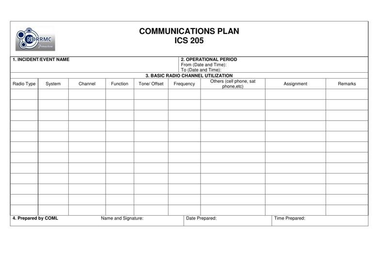

PURPOSE: The ICS 205 records methods of communication for all ICS personnel. It is used to provide information on all radio frequencies and other means of communication.
PREPARATION: The ICS 205 is completed, updated and maintained by the Communications Unit Leader (COML). It may also be filled-up by the LSC.
DISTRIBUTION: The ICS 205 is duplicated and attached to the ICS 202 and given to all recipients as part of the Incident Action Plan (IAP). All completed original forms must be given to the Documentation Unit.

BLOCK NO. |
BLOCK TITLE |
INSTRUCTIONS |
| 1 | Incident / Event Name | Enter the name assigned to the incident / event. |
| 2 | Operational Period | Enter the start date (mm-dd-yyyy) and time (24 hour format) and end date and time for the operational period to which the form applies. |
| 3 | Basic Radio Channel Utilization | Enter the details of the radio communication methods assigned and used for the assigned ICS position. |
| Radio Type | Enter the type of communication device used (e.g. VHF, UHF, HF etc.). |
|
| System | Enter the specific location (e.g. city/municipality) covered by the communication. |
|
| Channel | Can be named by number or alphabet (e.g. 1, 2, 3 or A, B, C). |
|
| Function | Enter the specific function of the channel (e.g. Command, Tactical, etc.). |
|
| Tone/Offset | A blank field indicates that the transmission is SIMPLEX. If filled, the transmission is DUPLEX. Indicate the tone/offset (e.g. +0.06 or -0.06) for DUPLEX transmissions. |
|
| Frequency | Enter the VHF, UHF, and HF frequency (e.g. VHF – 145.500MHz). |
|
| Others | Enter details for other forms of communication such as mobile phones and satellite phones. |
|
| Assignment | Indicate where the communication is assigned, i.e. IMT member, branch, division, group or other units. |
|
| Remarks | Enter the status of the communications (e.g. functional/ operational or non-functional / non-operational). You may enter other miscellaneous information concerning repeater locations, information concerning patched channels or talkgroups using links or gateways, etc. |
|
| 4 | Prepared by COML | Enter complete name of the COML, signature, date (mm-dd-yyyy), and time (24 hour format) the form was prepared and completed. In the absence of COML, it shall be prepared by the LSC. |